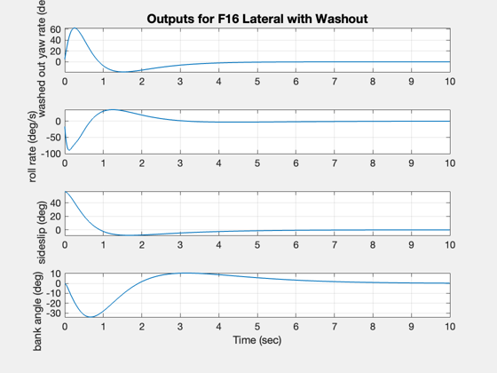
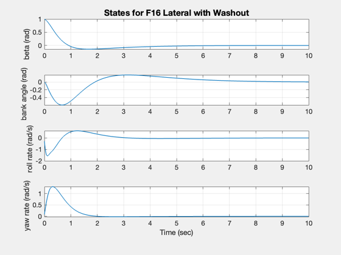
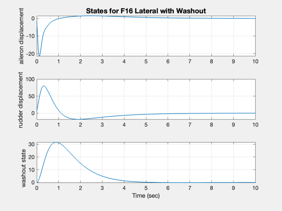
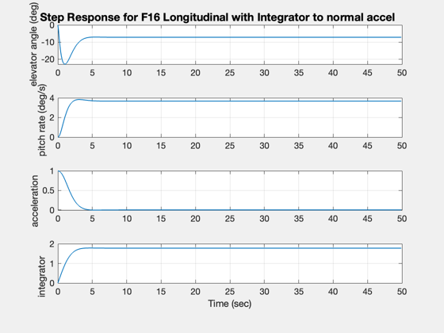
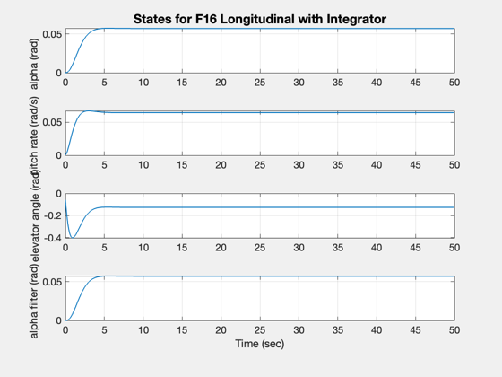
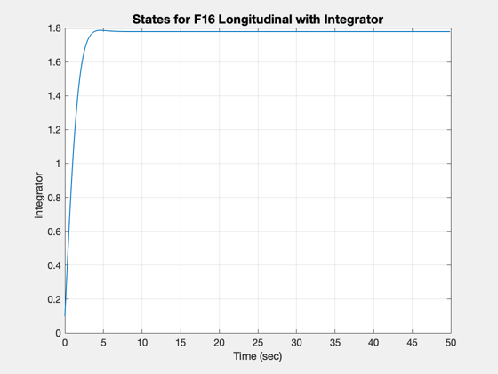
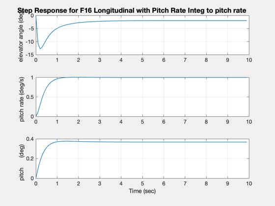
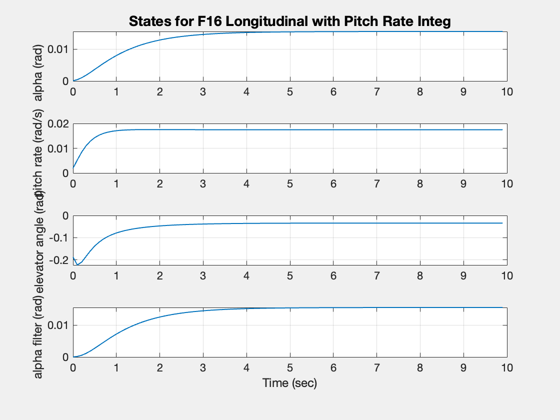
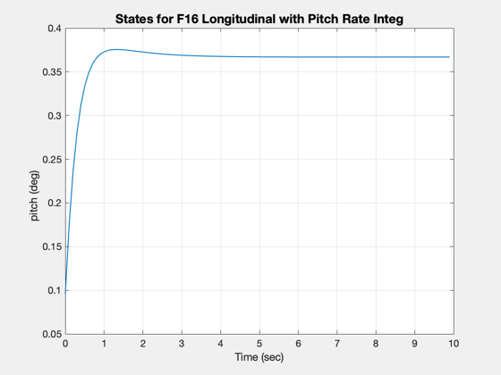

Demonstrate linear quadratic output feedback.
------------------------------------------------------------------------
See also F16, IC, LQC, Step
------------------------------------------------------------------------
Contents
g = F16('g lateral with washout');
w = [];
t = [];
Control Weights
rho = 0.1;
State Weighting
w.q = diag([50,100,100,50,0,0,1]);
Control Weighting
w.r = rho*eye(2);
gC = LQC( g, w, 'lqof' );
k = get( gC, 'd' );
disp(k)
[a,b,c] = getabcd( g );
g = set( g, a - b*k*c, 'a' );
IC( g, [1 0 0 0 0 0 0]', 0.01, 1000 );
-0.54311 -0.43168 0.11514 -0.33977
-1.2048 -0.2263 -0.45949 0.24691
  
Linear quadratic command tracking
g = F16('g longitudinal with integrator');
Tracking matrices
t.g = [0;0; 0; 0;1];
t.h = [-16.26 -0.9788 0.04852 0 0];
t.f = [0;0;1;0];
Augment w
w.q = [264 16 1 0 0;
16 1 0 0 0;
1 0 0 0 0;
0 0 0 0 0;
0 0 0 0 1];
w.r = 1;
w.r0 = 1;
w.v = [];
gC = LQC( g, w, 'lqtof', t );
k = get( gC, 'd' );
Augment the system for simulation purposes
[a,b,c,d] = getabcd( g );
inputs = get( g, 'inputs' );
inputs = char( inputs, 'normal accel' );
g = set( g, a - b*k*c, 'a' );
g = set( g, [b t.g], 'b' );
g = set( g, [d t.f], 'd' );
g = set( g, inputs, 'inputs' );
Step( g, 2, 0.1, 500 );
  
Time weighted linear quadratic regulator
g = F16('g longitudinal with pitch rate integ');
t.g = [0;0; 0; 0;1];
t.h = [0 57.2958 0 0 0];
t.f = [0;0;0];
Control Weights
w.q = zeros(5,5);
w.p = t.h'*t.h;
Control Weighting
w.r = 2;
w.r0 = 1;
w.n = 2;
[gC, j] = LQC( g, w, 'lqtxwof', t );
k = get( gC, 'd' );
disp(k);
[a,b,c,d] = getabcd( g );
inputs = get( g, 'inputs' );
inputs = strvcat( inputs, 'pitch rate' );
g = set( g, a - b*k*c, 'a' );
g = set( g, [b t.g], 'b' );
g = set( g, [d t.f], 'd' );
g = set( g, inputs, 'inputs' );
Step( g, 2, 0.1, 100 );
Exiting: Maximum number of iterations has been exceeded
- increase MaxIter option.
Current function value: 0.023745
353.1 -23768 66671
  